Plywood Cat
Laptop Stand
I made a simple personal laptop stand for CS 194: Design/Build in Fall 2014.

Sketches
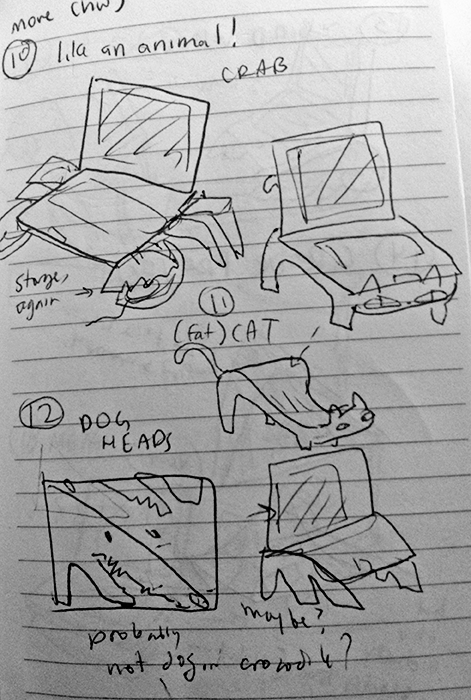 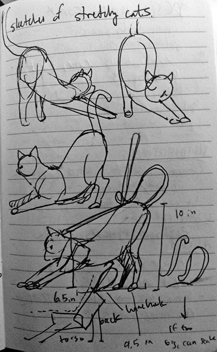The concept came around when mass (trash) ideating. I then drew some more cats for inspiration, and took some measurements.
Prototypes
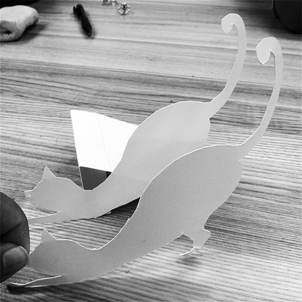 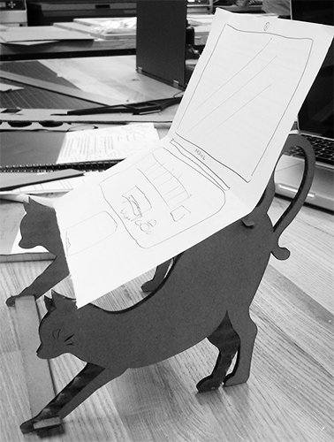 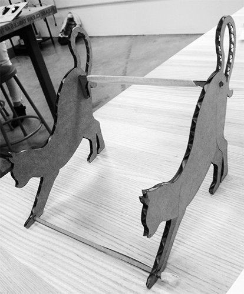Lo-fi paper → Cardboard laser cut
The angle was slightly too high on the cardboard prototype and the facial features felt a bit kitschy. I also needed to work out the logistics of stability.
Vector Illustrations
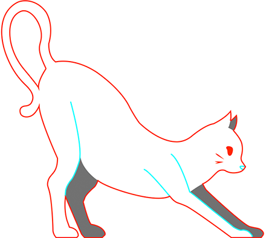 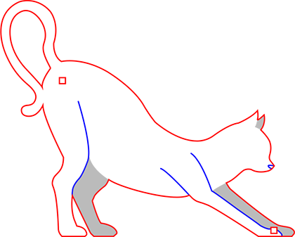 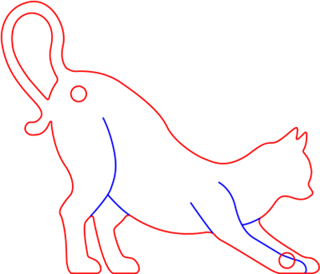The second illustration addresses the above concerns. The final vector was re-beizer'd complete with rounder corners for the CNC Router. I also made the legs fatter for support.
Final product
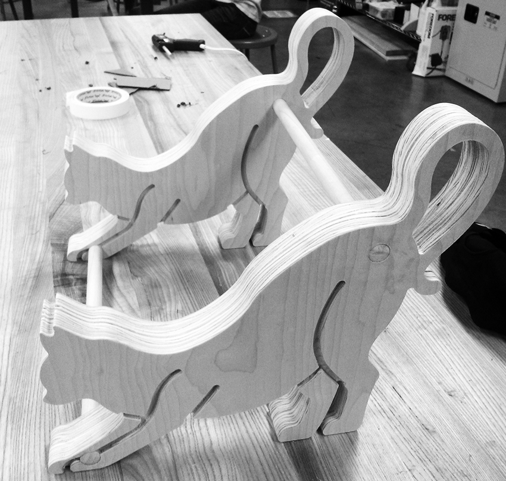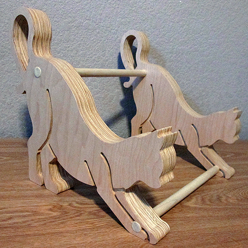 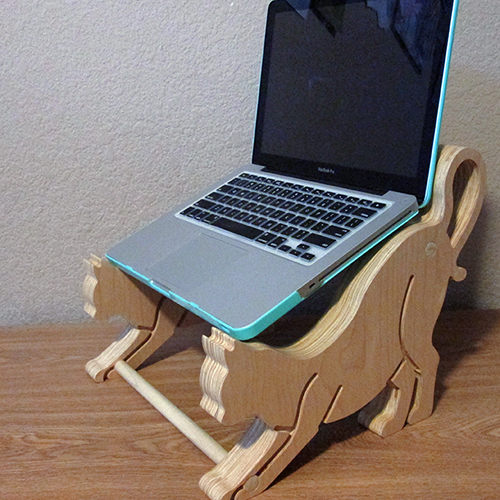
Two sheets of ~3/4ths inch plywood glued together per cat. Connected with wood glue and dowels. Stable? Yes. Cute? Yes.